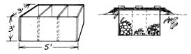

Our basement-like many with furnaces in 'em-is just too dry and warm to store root vegetables in for winter use. So, a few years back, my husband and I tried an old-time storage method that my father (who used this same technique himself many years ago) told us about ... the underground vegetable pit.
We've used our "outdoor cellar" for three winters since then, and it really does the job. In fact, during that third January the temperature dropped to 30 below! Once the brutal cold had let up a bit, we went out to our belowground storehouse to check its contents (no one ventured out during that freeze). Believe it or not, we carried a basket of fresh unfrozen vegetables back over the squeaky snow . . . produce that would have cost us several dollars at the market, if it were available at all!
And, as "a final frosting on the cake", the little pit that made this winter bonanza possible is as "easy as fallin' off a log" to put together.
Our storage bin is nothing more than a box of one-inch lumber (use hardwood, since pine pitch can ruin many vegetables) that measures five feet long, by three feet wide, by three feet deep.
You can (if you want to) divide your container into several compartments ... we partitioned ours into three 20-inch "cupboards". And you'll want a lid (which doesn't need hinges, a board covering will do) that extends an inch or so past the edge of the box on all four sides . . . so your cold-numbed fingers will have something to hold on to.
Once the box and the top are built, you're ready to dig your pit. This excavation should be two and a half feet deep and-of course-large enough to hold the wooden bin. Sink your box in the hole, fill in any spaces around the container's sides with loose soil, and then heap more dirt up around the box's "aboveground" edges. Be sure to slant this earth (as shown in the illustration) so that water will run off the mound and away from the wood.
We fill our box to within about six inches of its top with vegetables-most any root crop (such as potatoes, beets, turnips, rutabagas, salsify, winter radishes, or carrots) or cabbages-and then spread a gunnysack over each pile of garden goodies. The rest of the space in the mini-root cellar is packed with oak or maple leaves, which insulate well and don't settle much.
Finally, we put the lid back on, cover it with about four inches of leaves, and top our "homestead frigidaire" with a sheet of old roofing tin and a couple of bricks (to hold everything in place).
It must have been at least 50 years ago when my father used one of these vegetable pits. And you know what? Ours works just as well in 1978 as his did then!
|
 |
|
|